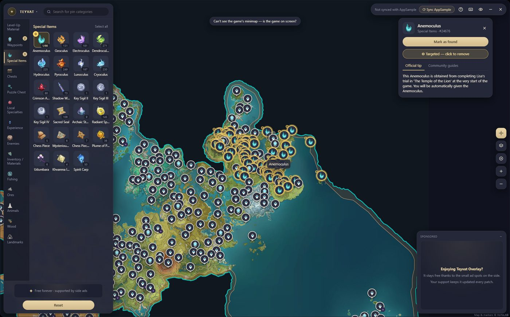
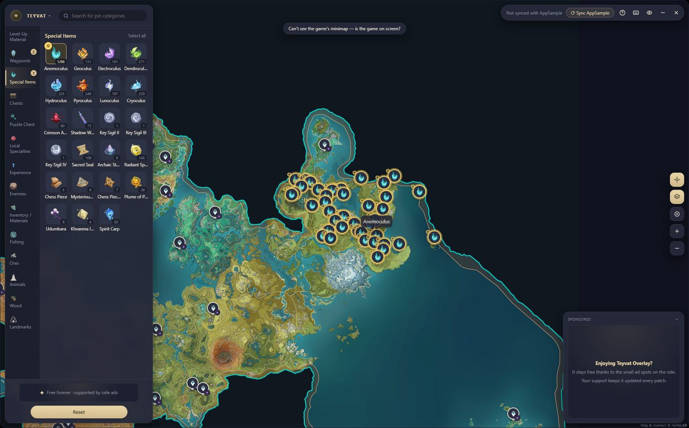

Knows where you are
Your position updates live on the map from the game's own minimap, even right after a teleport. No clicking "I'm here", no alt-tabbing to find yourself.
Free interactive map for Genshin Impact · Windows
Teyvat Live Map finds where you are from your minimap and shows every oculus, chest and material around you in a small overlay over the game. Pick up an oculus and it's marked found by itself.
Version 0.4.0 · Windows 10 & 11 · No account needed

Your position updates live on the map from the game's own minimap, even right after a teleport. No clicking "I'm here", no alt-tabbing to find yourself.
A see-through minimap sits over the game with every unfound pin around you, plus arrows and distances to anything off-screen. Hold Alt to move or resize it.
When the game shows "Obtained: Anemoculus", the app marks that exact oculus found on your map. Works for every oculus type, from Anemoculi to Lunoculi.
Oculi, chests, puzzles, local specialties, enemies, bosses, ores, fishing spots, waypoints and more, straight from the official HoYoLAB map data.
Pick a character and see exactly where their level-up and talent materials drop: the specialties, mobs, bosses and domains, all on the map.
Caves and underground areas show one floor at a time with a floor switcher, the way they work in the game, instead of a pile of layers on top of the world.
Show the map, mark the nearest item, undo or open a guide without leaving Genshin. Bind any key or your mouse's side buttons.
Already tracking on AppSample's Genshin map? Import the markers you've found in a minute, then keep going here.


Teyvat Live Map only looks at the picture on your screen. It never reads or changes the game's files or memory and never presses keys for you.
Yes, completely. It's made by one person and kept going by optional tips on Ko-fi.
No. It only looks at the picture on your screen, the same way recording software does: the minimap to find where you are, and the item list on the left to see when you pick up an oculus. It never reads or changes the game's files or memory.
The installer isn't signed with a paid company certificate, so Windows SmartScreen warns about it. Click More info, then Run anyway.
Genshin runs as administrator, and Windows hides key presses aimed at administrator windows from normal apps. Allowing the prompt lets your hotkeys work in game. Everything else works without it.
It watches whichever monitor Genshin is on, and runs on Windows 10 and 11. It's tuned on 1440p and 1080p screens; if tracking struggles on your setup, tell us which resolution you use.
It's built for the game in English, and also accepts small differences in spelling. If your game is in another language you can still mark anything with the collect hotkey.
No. Teyvat Live Map is a fan-made tool. Map data and icons come from HoYoLAB's public map.
Free · Windows 10 & 11 · Made by one fan